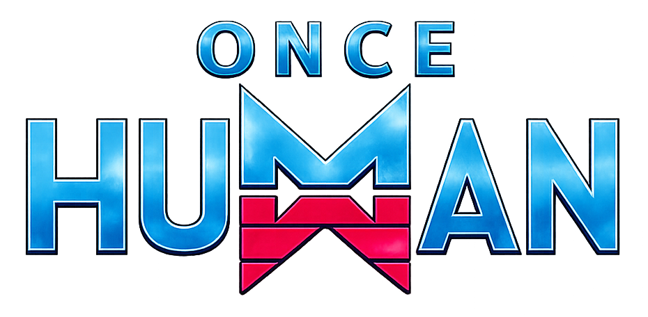

Once Human
Retour aux Aventures terminées
La Guilde part explorer les terres altérées d’un monde post-apocalyptique,
où la survie dépendra autant de notre refuge que de notre capacité à affronter les créatures nées de la Stardust.
📜 Informations de l'expédition
Origine : Aventure principale 🏆
Statut : Accomplie 🏆
📅 Début : Juillet 2026
🎮 Type : Survie / Exploration / Construction
👥 Participants : Sakura-Natas, Elfyre, Tibalte
📖 Histoire de l'aventure
Après la Chute des Étoiles, le monde a été transformé par une mystérieuse substance appelée Stardust.
Les survivants doivent désormais composer avec un environnement hostile, des créatures altérées et les vestiges d’une civilisation en ruines.
La Guilde devra explorer ces terres dévastées, construire un refuge capable de résister aux menaces et percer les mystères qui entourent la Stardust.
🎯 Objectifs de l'expédition
- 🌍 Explorer un monde brisé
- 🏠 Construire nos refuges
- ⚔️ Affronter les menaces et dévoiler la vérité
🎬 Souvenirs de l'expédition
Retrouvez les chroniques de cette aventure.